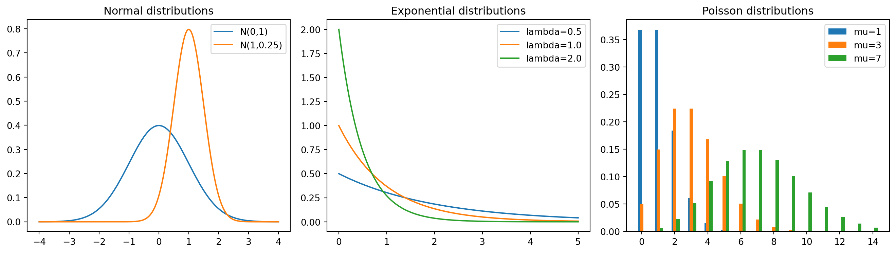
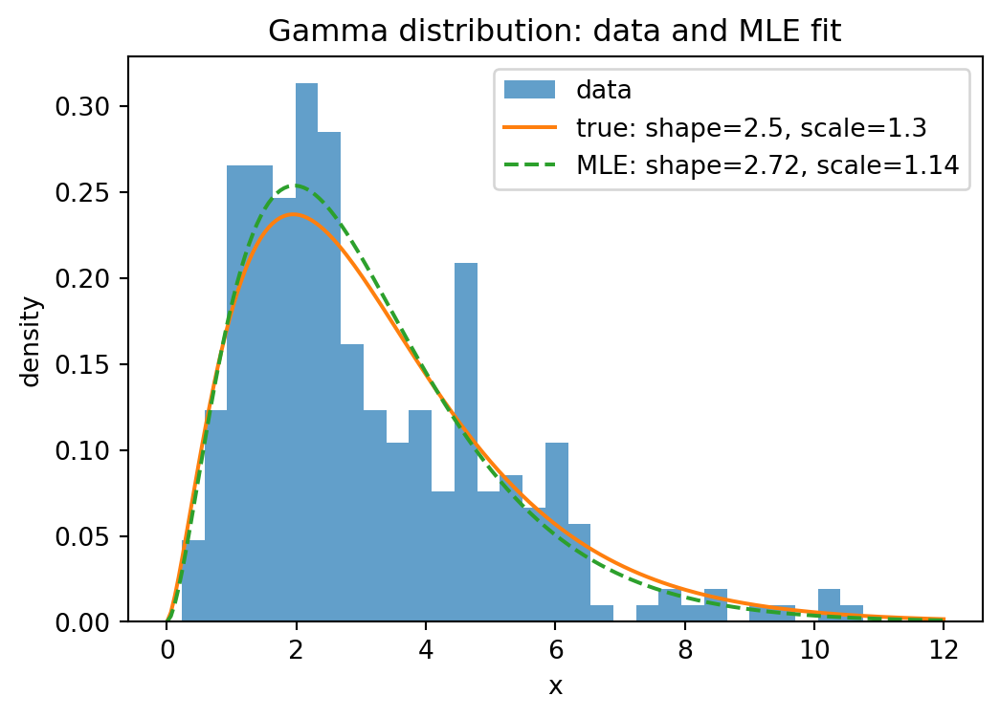
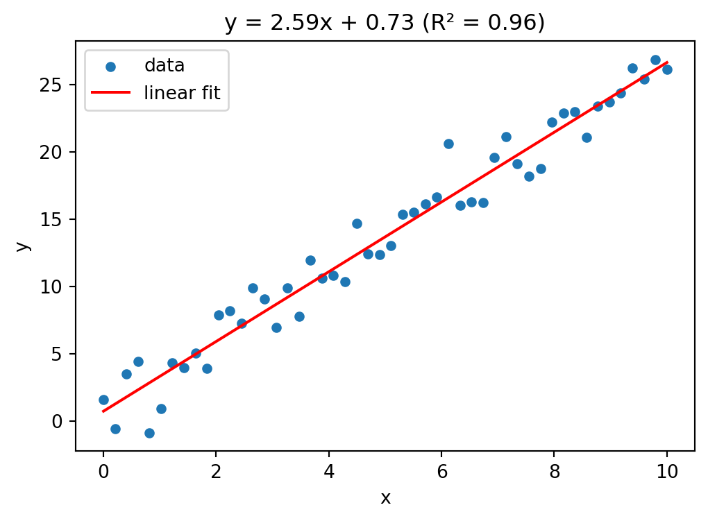
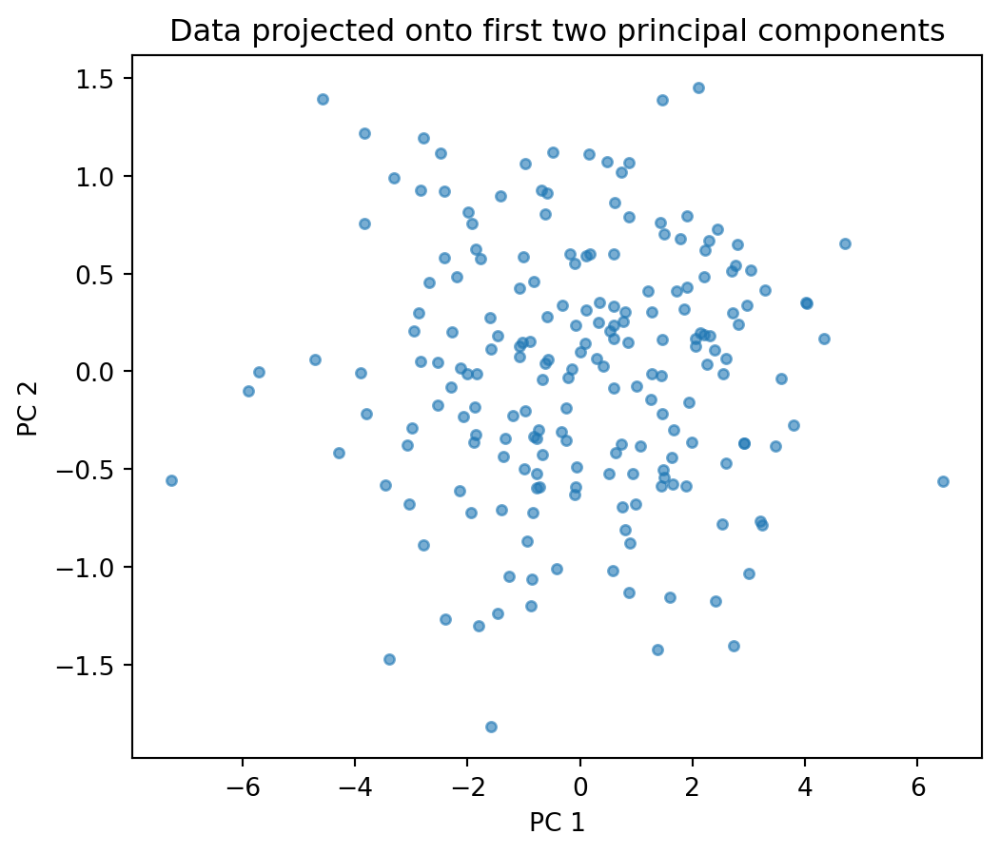
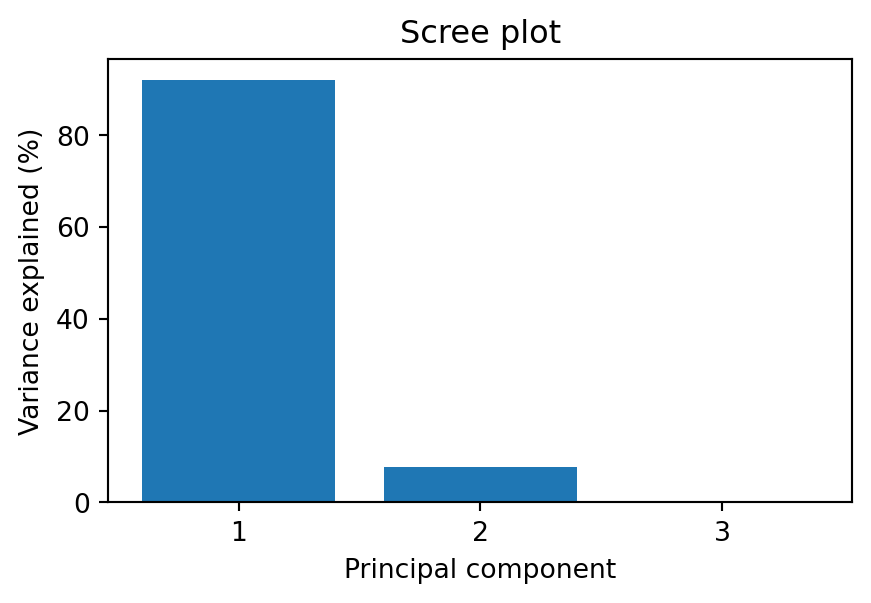

import numpy as np
import matplotlib.pyplot as plt
from scipy import stats9 Analyzing data
In this chapter, we learn about statistical analysis with scipy.stats, including descriptive statistics, probability distributions, statistical tests, and maximum likelihood estimation.
9.1 Descriptive statistics (scipy.stats)
The scipy.stats module provides functions for descriptive statistics and statistical tests. Here, data is a 1d array or list. Note that stats.describe(data) is different from the pandas method df.describe() (see Section 7.1): stats.describe works on a single 1d array and additionally returns skewness and kurtosis, while df.describe() gives summary statistics (count, mean, std, min, quartiles, max) for all numeric columns of a DataFrame.
stats.describe(data): returns count, min, max, mean, variance, skewness, kurtosis.stats.tmean(data, limits=(low, high)): trimmed mean — the mean computed only over values in the interval[low, high]. Withoutlimits, it returns the ordinary mean. This is useful to reduce the influence of outliers.stats.tstd(data, limits=(low, high)): trimmed standard deviation (same idea).stats.tvar(data, limits=(low, high)): trimmed variance (same idea).stats.pearsonr(x, y): Pearson correlation coefficient and p-value.stats.spearmanr(x, y): Spearman rank correlation and p-value.
data = [1, 2, 3, 4, 5, 6, 7, 8]
result = stats.describe(data)
print("count =", result.nobs)
print("min, max =", result.minmax)
print("mean =", result.mean)
print("variance =", result.variance)
print("skewness =", result.skewness)
print("kurtosis =", result.kurtosis)count = 8
min, max = (np.int64(1), np.int64(8))
mean = 4.5
variance = 6.0
skewness = 0.0
kurtosis = -1.2380952380952381data = np.array([2.3, 4.1, 3.7, 5.2, 4.8, 3.3])
print("trimmed mean =", stats.tmean(data))
print("std =", stats.tstd(data))
print("median =", np.median(data))trimmed mean = 3.9000000000000004
std = 1.0488088481701514
median = 3.9# correlation
rng = np.random.default_rng(0)
x = rng.normal(size=50)
y = 2 * x + 0.5 * rng.normal(size=50)
r, p_value = stats.pearsonr(x, y)
print(f"Pearson r = {r:.4f}, p-value = {p_value:.6f}")Pearson r = 0.9621, p-value = 0.0000009.2 Probability distributions (scipy.stats)
scipy.stats provides a large number of probability distributions. Each distribution object has a common interface. Here, dist is a distribution object (e.g. stats.norm, stats.expon, stats.poisson).
dist.rvs(size=n, random_state=seed): drawnrandom samples.sizecan be an integer or a tuple for multi-dimensional output (e.g.size=(3, 4)for a 3×4 array).random_stateaccepts an integer seed or anp.random.Generatorfor reproducibility.dist.pdf(x)/dist.pmf(x): density / probability mass function.dist.cdf(x): cumulative distribution function.dist.ppf(q): quantile function (inverse ofcdf).dist.mean(),dist.var(),dist.std(): theoretical moments.dist.fit(data): estimate parameters from data (maximum likelihood).
Each distribution takes its own parameters, e.g. stats.norm(loc=mu, scale=sigma), stats.poisson(mu=lam), stats.binom(n=n, p=p). See the scipy.stats documentation for the full list.
For continuous distributions, the location-scale convention is used: stats.norm(loc=mu, scale=sigma) gives \(\mathcal{N}(\mu, \sigma^2)\).
# standard normal
print("mean =", stats.norm.mean())
print("pdf(0) =", stats.norm.pdf(0))
print("cdf(1.96) =", stats.norm.cdf(1.96))
print("ppf(0.975) =", stats.norm.ppf(0.975))mean = 0.0
pdf(0) = 0.3989422804014327
cdf(1.96) = 0.9750021048517795
ppf(0.975) = 1.959963984540054# normal with given parameters
dist = stats.norm(loc=3, scale=2)
samples = dist.rvs(size=1000, random_state=42)
print("first 5 samples:", samples[:5])
print("theoretical mean =", dist.mean())
print("theoretical variance =", dist.var())
print("empirical mean =", np.mean(samples))
print("empirical variance =", np.var(samples))first 5 samples: [3.99342831 2.7234714 4.29537708 6.04605971 2.53169325]
theoretical mean = 3.0
theoretical variance = 4.0
empirical mean = 3.0386641116446507
empirical variance = 3.8316199589260687# exponential
print("Exp(1) mean =", stats.expon.mean())
print("Exp(1) samples:", stats.expon.rvs(size=5, random_state=0))Exp(1) mean = 1.0
Exp(1) samples: [0.79587451 1.25593076 0.92322315 0.78720115 0.55104849]# Poisson
print("Poisson(3) pmf(2) =", stats.poisson.pmf(2, mu=3))Poisson(3) pmf(2) = 0.22404180765538775# binomial
print("Binom(10, 0.3) pmf(3) =", stats.binom.pmf(3, n=10, p=0.3))
print("Binom(10, 0.3) mean =", stats.binom.mean(n=10, p=0.3))Binom(10, 0.3) pmf(3) = 0.2668279319999998
Binom(10, 0.3) mean = 3.0# visualizing distributions
fig, axes = plt.subplots(1, 3, figsize=(14, 4))
x = np.linspace(-4, 4, 200)
axes[0].plot(x, stats.norm.pdf(x), label="N(0,1)")
axes[0].plot(x, stats.norm.pdf(x, loc=1, scale=0.5), label="N(1,0.25)")
axes[0].set_title("Normal distributions")
axes[0].legend()
x = np.linspace(0, 5, 200)
for lam in [0.5, 1.0, 2.0]:
axes[1].plot(x, stats.expon.pdf(x, scale=1/lam), label=f"lambda={lam}")
axes[1].set_title("Exponential distributions")
axes[1].legend()
k = np.arange(0, 15)
for mu in [1, 3, 7]:
axes[2].bar(k + 0.2*(mu-3)/4, stats.poisson.pmf(k, mu=mu), width=0.2, label=f"mu={mu}")
axes[2].set_title("Poisson distributions")
axes[2].legend()
plt.tight_layout()
plt.show()
9.3 Statistical tests
scipy.stats provides many standard statistical tests. Each of the tests below returns a named tuple with two entries: a test statistic (.statistic) and a p-value (.pvalue). The p-value is the probability of observing a test statistic at least as extreme as the one computed, assuming the null hypothesis is true. A small p-value (typically below 0.05) suggests rejecting the null hypothesis.
stats.ttest_1samp(data, popmean): one-sample t-test (is the mean equal topopmean?).stats.ttest_ind(sample1, sample2): two-sample t-test (do two independent samples have the same mean?).stats.chisquare(observed): chi-squared test (do observed frequencies match expected frequencies?).stats.kstest(data, 'norm'): Kolmogorov-Smirnov test (does the data come from the given distribution?).
rng = np.random.default_rng(0)
data = rng.normal(loc=5.2, scale=1.0, size=30)
# one-sample t-test
t_stat, p_value = stats.ttest_1samp(data, popmean=5.0)
print(f"t-statistic = {t_stat:.4f}, p-value = {p_value:.4f}")t-statistic = 0.5225, p-value = 0.6053# two-sample t-test
sample1 = rng.normal(loc=5.0, scale=1.0, size=40)
sample2 = rng.normal(loc=5.5, scale=1.0, size=40)
t_stat, p_value = stats.ttest_ind(sample1, sample2)
print(f"t-statistic = {t_stat:.4f}, p-value = {p_value:.4f}")t-statistic = -1.2000, p-value = 0.2338# chi-squared test
observed = np.array([18, 22, 20, 25, 15])
stat, p_value = stats.chisquare(observed)
print(f"chi2-statistic = {stat:.4f}, p-value = {p_value:.4f}")chi2-statistic = 2.9000, p-value = 0.5747# Kolmogorov-Smirnov test
data = rng.normal(loc=0, scale=1, size=100)
stat, p_value = stats.kstest(data, 'norm')
print(f"KS statistic = {stat:.4f}, p-value = {p_value:.4f}")KS statistic = 0.0477, p-value = 0.96899.4 Maximum likelihood estimation
Maximum likelihood estimation (MLE) is one of the most important methods in statistics. Given i.i.d. observations \(x_1, \dots, x_n\) from a distribution with density \(f(x; \theta)\), the likelihood function is \[L(\theta) = \prod_{i=1}^n f(x_i; \theta),\] and the log-likelihood is \[\ell(\theta) = \sum_{i=1}^n \log f(x_i; \theta).\] The MLE is the parameter value that maximizes \(\ell(\theta)\), or equivalently minimizes \(-\ell(\theta)\).
In scipy.stats, the fit method computes the MLE for any distribution:
dist.fit(data): returns the MLE of the distribution parameters. Note thatdist.fitreturns only point estimates, not standard errors.dist.logpdf(x, ...): log-density, useful for computing the log-likelihood.
For cases where no closed-form MLE exists, we use numerical optimization via scipy.optimize.minimize (see Section 6.9). When using method='BFGS', the result includes an approximate inverse Hessian (result.hess_inv), whose diagonal entries are the asymptotic variances of the parameter estimates. Taking square roots gives the standard errors.
# MLE for the normal distribution
rng = np.random.default_rng(0)
true_mu = 3.0
true_sigma = 1.5
data = rng.normal(loc=true_mu, scale=true_sigma, size=200)
# analytical MLE
mu_hat = np.mean(data)
sigma_hat = np.std(data) # np.std uses 1/n, which is the MLE
print(f"true mu = {true_mu}, MLE mu = {mu_hat:.4f}")
print(f"true sigma = {true_sigma}, MLE sigma = {sigma_hat:.4f}")true mu = 3.0, MLE mu = 3.0229
true sigma = 1.5, MLE sigma = 1.4418# using scipy's fit method
mu_fit, sigma_fit = stats.norm.fit(data)
print(f"scipy fit: mu = {mu_fit:.4f}, sigma = {sigma_fit:.4f}")scipy fit: mu = 3.0229, sigma = 1.4418# MLE for the exponential distribution
# For Exp(lambda) with density lambda * exp(-lambda * x), the MLE is
# lambda_hat = 1 / x_bar
true_lambda = 2.0
# rng.exponential(scale, size) draws from an exponential distribution
data_exp = rng.exponential(scale=1/true_lambda, size=150)
lambda_hat = 1 / np.mean(data_exp)
print(f"true lambda = {true_lambda}, MLE lambda = {lambda_hat:.4f}")true lambda = 2.0, MLE lambda = 1.7986# MLE via numerical optimization (when no closed form exists)
# Example: Gamma distribution
from scipy import optimize
true_shape = 2.5
true_scale = 1.3
# rng.gamma(shape, scale, size) draws from a gamma distribution
data_gamma = rng.gamma(shape=true_shape, scale=true_scale, size=300)
def neg_log_likelihood_gamma(params):
a, scale = params
if a <= 0 or scale <= 0:
return np.inf # np.inf represents positive infinity
return -np.sum(stats.gamma.logpdf(data_gamma, a=a, scale=scale))
# BFGS provides an approximate inverse Hessian, from which we get
# standard errors
result = optimize.minimize(neg_log_likelihood_gamma, x0=[1.0, 1.0],
method='BFGS')
a_hat, scale_hat = result.x
print(f"true shape = {true_shape}, MLE shape = {a_hat:.4f}")
print(f"true scale = {true_scale}, MLE scale = {scale_hat:.4f}")
# standard errors from the inverse Hessian (asymptotic covariance matrix)
se = np.sqrt(np.diag(result.hess_inv))
print(f"std error of shape = {se[0]:.4f}")
print(f"std error of scale = {se[1]:.4f}")true shape = 2.5, MLE shape = 2.7227
true scale = 1.3, MLE scale = 1.1411
std error of shape = 0.2076
std error of scale = 0.0981# compare with scipy's built-in fit
# floc=0 fixes the location parameter to 0
a_fit, loc_fit, scale_fit = stats.gamma.fit(data_gamma, floc=0)
print(f"scipy fit: shape = {a_fit:.4f}, scale = {scale_fit:.4f}")scipy fit: shape = 2.7227, scale = 1.1411# visualizing the MLE fit
x_grid = np.linspace(0, 12, 200)
plt.figure(figsize=(6, 4))
plt.hist(data_gamma, bins=30, density=True, alpha=0.7, label="data")
plt.plot(x_grid, stats.gamma.pdf(x_grid, a=true_shape, scale=true_scale),
label=f"true: shape={true_shape}, scale={true_scale}")
plt.plot(x_grid, stats.gamma.pdf(x_grid, a=a_hat, scale=scale_hat),
label=f"MLE: shape={a_hat:.2f}, scale={scale_hat:.2f}",
linestyle="--")
plt.xlabel("x")
plt.ylabel("density")
plt.title("Gamma distribution: data and MLE fit")
plt.legend()
plt.show()
The following plot shows the log-likelihood as a function of the two parameters shape and scale (for the gamma distribution fitted above). To evaluate a function on a 2d grid of parameter values, we use np.meshgrid: given two 1d arrays shape_grid and scale_grid of lengths \(m\) and \(n\), np.meshgrid(shape_grid, scale_grid) returns two \(n \times m\) arrays SHAPE and SCALE such that (SHAPE[i,j], SCALE[i,j]) is the point (shape_grid[j], scale_grid[i]). This allows evaluating the log-likelihood at every grid point with a simple loop (or vectorized). We store the results in an array created by np.zeros_like(SHAPE), which returns an array of zeros with the same shape as SHAPE. The result is visualized with plt.contourf, which draws filled contour lines.
# log-likelihood surface for the Gamma distribution
shape_grid = np.linspace(1.5, 4.0, 100)
scale_grid = np.linspace(0.7, 2.0, 100)
SHAPE, SCALE = np.meshgrid(shape_grid, scale_grid)
# option 1: explicit loop (clear, but slow for large grids)
log_lik = np.zeros_like(SHAPE)
for i in range(len(scale_grid)):
for j in range(len(shape_grid)):
log_lik[i, j] = np.sum(stats.gamma.logpdf(data_gamma, a=SHAPE[i, j],
scale=SCALE[i, j]))
# option 2: vectorized via broadcasting (much faster)
# data_gamma has shape (300,), SHAPE and SCALE have shape (100, 100)
# by reshaping data to (300, 1, 1), logpdf broadcasts to shape (300, 100, 100)
log_lik = np.sum(stats.gamma.logpdf(data_gamma[:, None, None],
a=SHAPE[None, :, :], scale=SCALE[None, :, :]), axis=0)
plt.figure(figsize=(6, 5))
plt.contourf(SHAPE, SCALE, log_lik, levels=30, cmap="viridis")
plt.colorbar(label="log-likelihood")
plt.xlabel("shape")
plt.ylabel("scale")
plt.title("Log-likelihood surface for Gamma(shape, scale)")
# "r*" is a format string: "r" = red color, "*" = star marker
plt.plot(a_hat, scale_hat, "r*", markersize=15, label="MLE")
plt.legend()
plt.show()
Plotting the log-likelihood surface helps build geometric intuition: the MLE is the peak of the surface. For well-behaved models, the surface is concave near the maximum, and the curvature encodes the precision of the estimate (related to the Fisher information).
9.5 Linear regression
Linear regression fits a linear model \(y = \beta_0 + \beta_1 x_1 + \cdots + \beta_p x_p + \varepsilon\) to data, where \(\varepsilon\) is the error term. The goal is to find the coefficients \(\beta_0, \dots, \beta_p\) that minimize the sum of squared residuals \(\sum_i (y_i - \hat{y}_i)^2\). This is called ordinary least squares (OLS).
stats.linregress(x, y): simple linear regression (\(y = \beta_0 + \beta_1 x\)). Returns a named tuple withslope,intercept,rvalue(correlation coefficient),pvalue(for the null hypothesis that the slope is zero), andstderr(standard error of the slope).np.polyfit(x, y, deg): fit a polynomial of degreedegto the data. Fordeg=1, this gives the same result as linear regression.np.polyval(coeffs, x): evaluate a polynomial with the given coefficients atx.
# simple linear regression
rng = np.random.default_rng(42)
x = np.linspace(0, 10, 50)
y = 2.5 * x + 1.0 + rng.normal(scale=2.0, size=50)
result = stats.linregress(x, y)
print(f"slope = {result.slope:.4f}")
print(f"intercept = {result.intercept:.4f}")
print(f"R-squared = {result.rvalue**2:.4f}")
print(f"p-value = {result.pvalue:.6f}")
print(f"std error of slope = {result.stderr:.4f}")slope = 2.5905
intercept = 0.7301
R-squared = 0.9629
p-value = 0.000000
std error of slope = 0.0734# visualizing the fit
plt.figure(figsize=(6, 4))
plt.scatter(x, y, s=20, label="data")
plt.plot(x, result.slope * x + result.intercept, color="red",
label="linear fit")
plt.xlabel("x")
plt.ylabel("y")
title = (f"y = {result.slope:.2f}x + {result.intercept:.2f}"
f" (R² = {result.rvalue**2:.2f})")
plt.title(title)
plt.legend()
plt.show()
For multiple linear regression (\(p > 1\) predictors), scipy.stats.linregress does not suffice. Instead, we can solve the normal equations directly using np.linalg.lstsq, which computes the least squares solution of an overdetermined system.
np.linalg.lstsq(A, b, rcond=None): solve \(A \beta \approx b\) in the least squares sense. Returns a tuple of four values: the coefficient vector \(\beta\), the sum of squared residuals (empty ifAhas fewer rows than columns), the rank ofA, and its singular values.
# multiple linear regression: y = beta0 + beta1 * x1 + beta2 * x2
rng = np.random.default_rng(7)
n = 100
x1 = rng.normal(size=n)
x2 = rng.normal(size=n)
y = 3.0 + 1.5 * x1 - 2.0 * x2 + rng.normal(scale=0.5, size=n)
# design matrix with intercept column
A = np.column_stack([np.ones(n), x1, x2])
beta, residuals, rank, sv = np.linalg.lstsq(A, y, rcond=None)
print(f"intercept = {beta[0]:.4f} (true: 3.0)")
print(f"beta1 = {beta[1]:.4f} (true: 1.5)")
print(f"beta2 = {beta[2]:.4f} (true: -2.0)")intercept = 2.9429 (true: 3.0)
beta1 = 1.5215 (true: 1.5)
beta2 = -1.9444 (true: -2.0)# R-squared for the multiple regression
y_pred = A @ beta
ss_res = np.sum((y - y_pred)**2)
ss_tot = np.sum((y - np.mean(y))**2)
r_squared = 1 - ss_res / ss_tot
print(f"R-squared = {r_squared:.4f}")R-squared = 0.9469The R-squared value (\(R^2 = 1 - \text{SS}_{\text{res}} / \text{SS}_{\text{tot}}\)) measures the fraction of variance in \(y\) explained by the model. A value close to 1 indicates a good fit.
9.6 Principal component analysis (PCA)
Principal component analysis (PCA) is a technique for reducing the dimensionality of a dataset while retaining as much variance as possible. Given \(n\) observations with \(p\) features, PCA finds new orthogonal axes (called principal components) along which the data varies most. The first principal component captures the most variance, the second the most remaining variance (orthogonal to the first), and so on. This is useful for visualization (projecting high-dimensional data to 2d), noise reduction, and understanding the structure of a dataset.
Mathematically, let \(X \in \mathbb{R}^{n \times p}\) be the data matrix with \(n\) observations (rows) and \(p\) features (columns). Write the rows as \(x_1, \dots, x_n \in \mathbb{R}^p\). First, center the data by subtracting the column-wise mean \(\bar{x} = \frac{1}{n} \sum_{i=1}^n x_i\): \[\tilde{x}_i = x_i - \bar{x}, \qquad \tilde{X} = \begin{pmatrix} \tilde{x}_1^\top \\ \vdots \\ \tilde{x}_n^\top \end{pmatrix} \in \mathbb{R}^{n \times p}.\] The sample covariance matrix \(C \in \mathbb{R}^{p \times p}\) has entries \[C_{jk} = \frac{1}{n-1} \sum_{i=1}^n \tilde{x}_{ij} \, \tilde{x}_{ik}, \qquad j,k = 1, \dots, p,\] or in matrix form \(C = \frac{1}{n-1} \tilde{X}^\top \tilde{X}\). The diagonal entry \(C_{jj}\) is the sample variance of feature \(j\), and \(C_{jk}\) (\(j \neq k\)) measures how features \(j\) and \(k\) co-vary: positive if they tend to increase together, negative if one increases when the other decreases, and zero if they are uncorrelated.
Since \(C\) is symmetric and positive semi-definite, it has an eigendecomposition \(C = V \Lambda V^\top\), where \(V = (v_1, \dots, v_p)\) is an orthogonal matrix of eigenvectors and \(\Lambda = \text{diag}(\lambda_1, \dots, \lambda_p)\) contains the eigenvalues \(\lambda_1 \geq \lambda_2 \geq \cdots \geq \lambda_p \geq 0\). The eigenvector \(v_j\) is the \(j\)-th principal component direction, and \(\lambda_j\) is the variance of the data when projected onto \(v_j\), i.e. \(\lambda_j = \text{Var}(\tilde{X} v_j) = \frac{1}{n-1} \| \tilde{X} v_j \|^2\). The fraction of total variance explained by the first \(k\) components is \(\sum_{j=1}^k \lambda_j \,/\, \sum_{j=1}^p \lambda_j\).
To reduce the data from \(p\) dimensions to \(k\), we project: \(X_k = \tilde{X} V_k\), where \(V_k = (v_1, \dots, v_k) \in \mathbb{R}^{p \times k}\) contains the first \(k\) eigenvectors. The resulting matrix \(X_k \in \mathbb{R}^{n \times k}\) gives the coordinates of each observation in the new \(k\)-dimensional space.
np.cov(X, rowvar=False): compute \(C = \frac{1}{n-1} \tilde{X}^\top \tilde{X}\), where rows ofXare observations and columns are features. The optionrowvar=Falsetells NumPy that rows are observations (the default assumes the opposite).np.linalg.eigh(C): eigendecomposition of a symmetric matrix \(C\). This is a variant ofnp.linalg.eig(see Section 6.6) specialized for symmetric (Hermitian) matrices: it guarantees real eigenvalues and returns them sorted in ascending order. Returns eigenvalues and eigenvectors as columns.- Projection:
X_centered @ V[:, :k]computes \(X_k = \tilde{X} V_k\), i.e. projects the data onto the firstkprincipal components (after reversing the order so that the largest eigenvalue comes first).
# generate correlated 3d data
rng = np.random.default_rng(42)
n = 200
z1 = rng.normal(size=n)
z2 = rng.normal(size=n)
z3 = rng.normal(size=n) * 0.1 # very little variance in this direction
# the three features are mixtures of z1, z2, z3
X = np.column_stack([
2 * z1 + 0.5 * z2,
z1 + z2,
0.5 * z1 + 0.3 * z2 + z3
])# step 1: center the data
X_centered = X - X.mean(axis=0)
# step 2: compute the covariance matrix
C = np.cov(X_centered, rowvar=False)
print("Covariance matrix:")
print(np.round(C, 3))Covariance matrix:
[[3.245 1.917 0.873]
[1.917 1.691 0.65 ]
[0.873 0.65 0.277]]# step 3: eigendecomposition
eigenvalues, eigenvectors = np.linalg.eigh(C)
# eigh returns eigenvalues in ascending order — reverse for descending
eigenvalues = eigenvalues[::-1]
eigenvectors = eigenvectors[:, ::-1]
print("Eigenvalues:", np.round(eigenvalues, 3))
print("Variance explained (%):", np.round(eigenvalues / eigenvalues.sum() * 100, 1))Eigenvalues: [4.798 0.405 0.01 ]
Variance explained (%): [92. 7.8 0.2]# step 4: project onto the first 2 principal components
X_pca = X_centered @ eigenvectors[:, :2]
plt.figure(figsize=(6, 5))
plt.scatter(X_pca[:, 0], X_pca[:, 1], s=15, alpha=0.6)
plt.xlabel("PC 1")
plt.ylabel("PC 2")
plt.title("Data projected onto first two principal components")
plt.show()
# scree plot: how much variance does each component explain?
plt.figure(figsize=(5, 3))
plt.bar(range(1, len(eigenvalues) + 1), eigenvalues / eigenvalues.sum() * 100)
plt.xlabel("Principal component")
plt.ylabel("Variance explained (%)")
plt.title("Scree plot")
plt.xticks(range(1, len(eigenvalues) + 1))
plt.show()
The scree plot shows the variance explained by each principal component. A sharp drop suggests that only the first few components carry meaningful information — the rest is mostly noise. In this example, the third component explains very little variance, so projecting from 3d to 2d loses almost no information.
9.7 Exercises
Exercise 1 Load the Auto MPG dataset (originally from the UCI Machine Learning Repository) using pd.read_csv. Use stats.describe on the mpg column and compare the output with df["mpg"].describe(). Compute the Pearson and Spearman correlation between weight and mpg. Which is stronger? Why might they differ?
# Exercise 1Exercise 2 Generate 1000 samples from a \(\mathcal{N}(2, 3^2)\) distribution. Plot a histogram together with the true density, the density of the MLE fit (stats.norm.fit), and the density of a fit where you deliberately set \(\mu = 0\) (wrong mean). Add a legend.
# Exercise 2Exercise 3 Load the Advertising dataset (from the textbook An Introduction to Statistical Learning by James, Witten, Hastie, and Tibshirani) using pd.read_csv. Use stats.linregress to fit a simple linear regression of sales on TV. Report the slope, intercept, R-squared, and p-value. Plot the data as a scatter plot with the regression line. Then fit a multiple regression of sales on TV, radio, and newspaper using np.linalg.lstsq. Compare the R-squared values. Which predictor contributes least?
# Exercise 3Exercise 4 Load the Auto MPG dataset (same URL as Exercise 1). Select the numeric columns mpg, cylinders, displacement, horsepower, weight, acceleration. Drop rows with missing values. Perform PCA on the standardized data. How much variance do the first two components explain? Plot the data projected onto the first two principal components, coloring points by cylinders. What structure do you see?
# Exercise 4Exercise 5 Generate two samples of size 50: one from an exponential distribution with rate 1, the other from a normal distribution with mean 1 and standard deviation 1. Use a Kolmogorov-Smirnov test (stats.kstest) to test whether each sample could come from a normal distribution. Interpret the p-values. Then use a chi-squared test on binned data to test the same hypothesis.
# Exercise 5Exercise 6 A QQ-plot (quantile-quantile plot) compares the quantiles of a sample against the theoretical quantiles of a reference distribution. If the data follow the reference distribution, the points lie on a straight line. Use stats.probplot(data, dist="norm", plot=plt) to create QQ-plots for: (a) 200 samples from a standard normal, (b) 200 samples from an exponential distribution, (c) 200 samples from a \(t\)-distribution with 3 degrees of freedom (stats.t.rvs(df=3, size=200)). Which sample deviates most from normality, and how does the deviation appear in the QQ-plot?
# Exercise 6Exercise 7 Generate two samples: sample_a from \(\mathcal{N}(5, 1)\) (size 30) and sample_b from \(\mathcal{N}(5.5, 1)\) (size 30). Perform a two-sample t-test. Then repeat this experiment 1000 times and count how often the test rejects at level \(\alpha = 0.05\). This is the empirical power of the test. How does it change if you increase the sample size to 100?
# Exercise 6Exercise 8 Using the World Bank API (see Section 7.9), fetch GDP per capita (NY.GDP.PCAP.CD) and life expectancy (SP.DYN.LE00.IN) for all countries for the year 2022. Drop missing values. Use stats.pearsonr and stats.spearmanr to compute both correlation coefficients. Create a scatter plot of GDP per capita vs. life expectancy. Why does the Spearman correlation differ from the Pearson correlation? Hint: try plotting GDP on a log scale (plt.xscale("log")).
# Exercise 8Exercise 9 Using the World Bank API, fetch Germany’s total population (SP.POP.TOTL) for each year from 1960 to 2023. Use stats.linregress to fit a linear trend to the data. Plot the population over time together with the regression line. Compute the residuals and plot them. Does a linear model fit well? What happens around 1990?
# Exercise 9Exercise 10 Using the World Bank API, fetch GDP per capita (NY.GDP.PCAP.CD) for all countries for the years 2010 and 2020. Merge the two years into a single DataFrame so that each country has columns gdp_2010 and gdp_2020. Drop rows with missing values. Use a paired t-test (stats.ttest_rel) to test whether GDP per capita has changed significantly. Then fit a normal distribution to the differences gdp_2020 - gdp_2010 using stats.norm.fit and plot the histogram together with the fitted density.
# Exercise 10Exercise 11 Generate 200 samples from a mixture of two normals: with probability 0.4 draw from \(\mathcal{N}(-2, 1)\), otherwise from \(\mathcal{N}(3, 0.5^2)\). Write a function that computes the negative log-likelihood of a two-component Gaussian mixture (with 5 parameters: \(\mu_1, \sigma_1, \mu_2, \sigma_2, p\)). Use scipy.optimize.minimize to find the MLE. Plot the histogram and the fitted density.
# Exercise 11Exercise 12 Using the World Bank API, fetch life expectancy (SP.DYN.LE00.IN) and GDP per capita (NY.GDP.PCAP.CD) for all countries for the year 2022. Drop missing values. Standardize both variables. Perform PCA on the two-dimensional data. What fraction of the variance is explained by the first principal component? Plot the data in the original and in the PCA coordinate system. Does PCA help here, given that there are only two features?
# Exercise 12